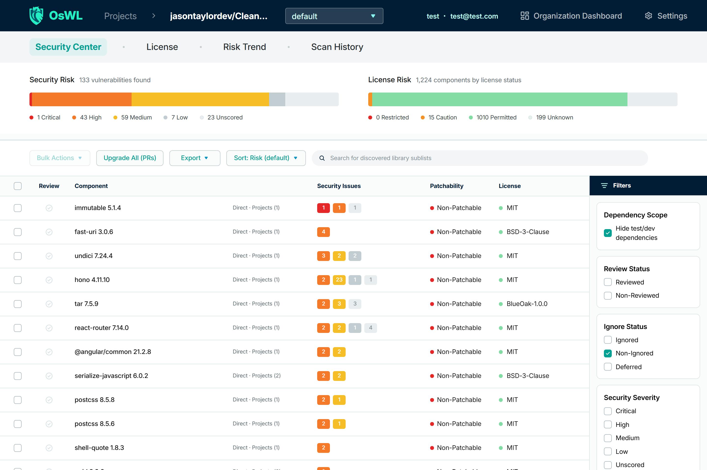
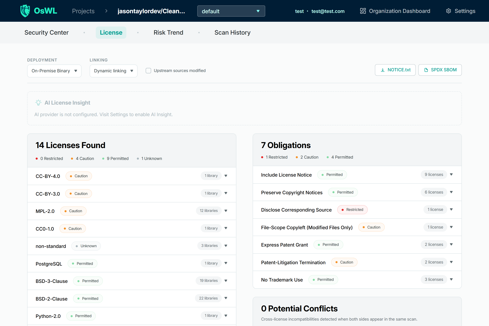
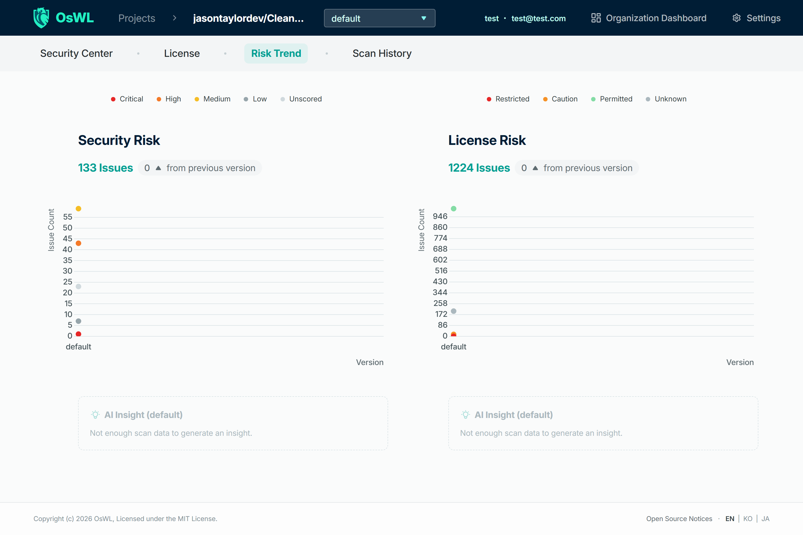
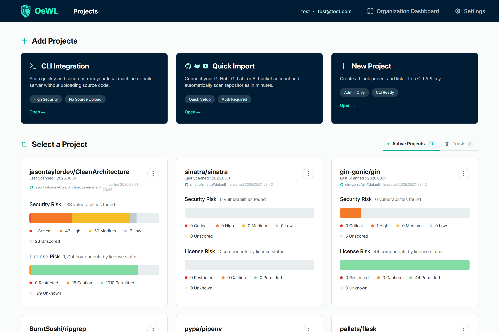
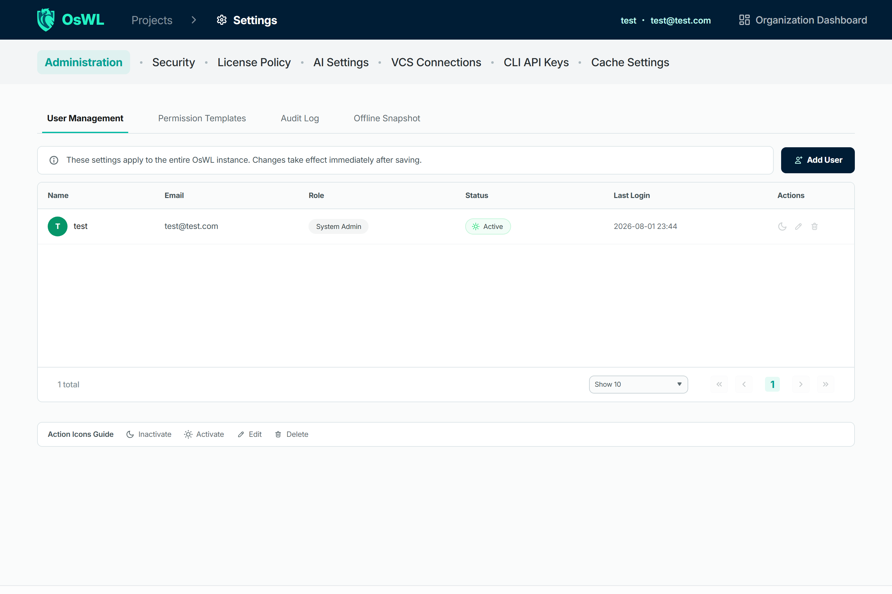

숨겨진 취약점을 탐지하고,
해결 방법까지 제시하다
기업 소프트웨어의 70~90%를 차지하는 오픈소스 라이브러리의 보안 취약점과 라이선스 리스크를 AI로 분석하고, 즉시 실행 가능한 해결 방법까지 안내하는 Enterprise SCA(Software Composition Analysis) 플랫폼

프로젝트 개요
OsWL은 기업의 소프트웨어 공급망 보안과 라이선스 컴플라이언스를 통합 관리하는 SCA 플랫폼입니다. 탐지에서 멈추는 기존 도구들과 달리, 해결 방법까지 원스톱으로 제공합니다.
왜 지금 이 문제인가?
오늘날 기업 소프트웨어의 대부분은 외부 오픈소스 라이브러리로 구성됩니다. 개발자가 Spring 하나를 추가하면 수백 개의 라이브러리가 자동으로 따라옵니다.
어디에 무엇이 있는지 모른다
의존성 트리가 수백 개로 확장되어 개발자도 파악이 불가능합니다. Log4Shell은 4년이 지난 2025년에도 4,000만 건이 패치되지 않은 채 방치되고 있습니다.
찾아도 어떻게 고쳐야 할지 모른다
기존 SCA 도구는 "취약점 있음"까지만 알려줍니다. CVE 검색부터 안전 버전 탐색, 호환성 검증까지 모든 과정을 담당자가 수동으로 처리해야 합니다.
저작권 위반인지 모르고 사용한다
GPL 라이브러리가 Transitive Dependency로 몰래 포함됩니다. 한컴은 GPL 무단 사용으로 미국 소송에서 약 23억 원을 합의 지불했습니다.
페인포인트 심층 분석
각 사용자 유형이 실제 업무에서 겪는 구체적인 상황을 분석했습니다.
어디에 뭐가 있는지 모른다
개발자가 Spring 프레임워크를 추가하면 자동으로 수백 개의 라이브러리가 따라옵니다. 각각의 버전, 라이선스, 취약점을 개발자가 전부 파악하는 것은 물리적으로 불가능합니다.
찾아도 어떻게 고쳐야 할지 모른다
기존 도구들은 "이 라이브러리에 취약점 있음"까지만 알려줍니다. 이후의 판단과 대응은 전적으로 사람에게 맡겨집니다.
- ①취약점 목록 수백 개 수령
- ②하나하나 CVE 번호 검색
- ③어느 버전이 안전한지 공식 문서 확인
- ④업그레이드 시 호환성 문제 없는지 추가 확인
- ⑤개발팀에 전달 → "어떻게 고쳐요?" 역질문 수신
- ⑥처음부터 반복
저작권 위반인지 모르고 사용한다
Transitive Dependency로 GPL 라이브러리가 개발자 모르게 포함되는 경우가 빈번합니다. "몰랐다"는 변명은 법정에서 통하지 않습니다.
Orange(프랑스 통신사) → GPL 위반 → 법원 손해배상 판결
시장 규모 & SWOT
2024 기준
지속 상승 중
강제 수요 발생 예정
왜 지금인가?
규제가 강제함
EU CRA 2026년 9월 시행. 취약점 발견 시 24시간 내 보고 의무. 한국 수출 기업도 직격
수요가 폭발함
오픈소스 사용 비율 매년 증가. SolarWinds 등 공급망 공격 사례로 기업 인식 전환 중
공급이 부족함
대응 방안까지 제시하는 서비스 사실상 없음. 한국어 지원 공백. 중소기업 가격대 부재
- 탐지 + 대응 방안까지 원스톱 (경쟁사 모두 탐지까지만)
- 보안 취약점 + 저작권 분석을 하나의 플랫폼에 통합
- AI가 오탐지를 걸러내 수동 검토 노동 대폭 감소
- 라이선스 고지문 자동 생성 (경쟁사 미지원)
- 신규 서비스라 브랜드 신뢰 부재
- 기업 보안 정책상 코드 외부 업로드 금지 이슈
- 누적 데이터량이 Black Duck 대비 적음
- EU CRA 2026년 9월 시행 → 강제 수요 발생
- 한국어 지원 서비스 사실상 없음 → 국내 시장 공백
- 오픈소스 사용 비율 매년 연속 증가
- 경쟁사도 AI 빠르게 통합 중
- GitHub Dependabot 무료로 기본 기능 제공
- "AI가 틀릴 수 있다"는 보안 분야 신뢰 이슈
경쟁사 비교 분석
5개 주요 경쟁사 대비 OsWL의 차별화 포지셔닝을 정의했습니다.
| 제품 | CVE 탐지 | 라이선스 분석 | AI 대응 방안 | 고지문 생성 | 가격대 | 한계 / 차별점 |
|---|---|---|---|---|---|---|
| OsWL 우리 | ✓ 있음 | ✓ 있음 | ✓ 있음 | ✓ 있음 | 중소기업 친화적 | 탐지 + 대응 + 고지문 완전 원스톱 |
| Black Duck | ✓ 있음 | ✓ 있음 | ✗ 없음 | △ 제한적 | 수천만 원+/년 | 오탐지 多 / AI 없음 / 구식 UI |
| Snyk | ✓ 있음 | △ 제한적 | △ 일부만 | ✗ 없음 | $25/개발자/월~ | 라이선스 분석 약함 / 규모 커지면 비용 폭발 |
| FOSSA | △ 제한적 | ✓ 있음 | ✗ 없음 | ✓ 있음 | $207/월~ | CVE 탐지 기능 부족 |
| Mend.io | ✓ 있음 | ✓ 있음 | ✓ 있음 | ✗ 없음 | $650/월 (10인) | 고가 / 중소기업 진입 불가 |
사용자 페르소나 & 핵심 가설
각 사용자의 페인포인트에서 출발해 검증할 핵심 가설을 도출했습니다.
- Spring 추가 시 수백 개 라이브러리 자동 포함, 파악 불가
- CVE 번호만 받고 어떤 버전으로 올려야 할지 직접 찾아야 함
- 경고 수십 개 쏟아지면 결국 전부 무시
- 오탐지가 많아 수백 개 결과를 전부 수동 검토
- 개발팀의 "어떻게요?" 역질문 — 보안팀이 답까지 제공해야 함
- 여러 프로젝트 상태를 스프레드시트로 수동 관리
- 보안 스캔이 빌드 시간 20~30분 추가 — 팀이 skip 압력
- 오탐지로 멀쩡한 배포까지 차단되는 상황 발생
- CI/CD 연동 설정 복잡, 도구마다 방식이 달라 시간 낭비
- 전사 취약점 현황 통합 조회 방법 없어 보안팀 보고만 의존
- GPL 사용 여부가 개발자 개인 인지에만 의존 — 소송 리스크
- EU CRA 등 규제 강화로 컴플라이언스 비용 증가
핵심 기능 설계
각 페르소나의 페인포인트를 해결하는 5개 핵심 모듈. 탐지부터 대응까지, 보안에서 라이선스까지 원스톱으로.
Security Center — 보안 취약점 분석
스캔된 라이브러리의 CVE 취약점을 Critical · High · Medium · Low 심각도로 분류합니다. Security Risk와 License Risk를 상단 스택바로 즉각 시각화하며, Bulk Actions로 여러 항목을 일괄 처리할 수 있습니다. 필터·검색·Export CSV 기능으로 보안 감사 보고서를 즉시 생성합니다.
License — 라이선스 리스크 관리
오픈소스 라이선스를 Restricted · Caution · Permitted · Unknown으로 자동 분류합니다. GPL, LGPL 등 기업 위험 라이선스를 탐지하고, 각 라이브러리의 라이선스 영향 범위를 직관적으로 시각화합니다. 향후 라이선스 의무사항(Obligations) 자동 분석 기능이 추가 예정입니다.

Risk Trend — 버전별 리스크 추이
프로젝트의 버전별 Security Risk · License Risk 변화를 시계열 차트로 시각화합니다. "이전 버전 대비 -2" 같은 개선 지표를 직관적으로 표시해 CTO·기술 리드가 경영진 언어로 보안 현황을 파악하고 보고할 수 있습니다.

Projects — 프로젝트 등록 & 스캔 진입
두 가지 방법으로 프로젝트를 등록할 수 있습니다. 소스코드 업로드 없이 로컬 환경에서 스캔하는 CLI Integration과 GitHub·GitLab·Bitbucket을 연동해 레포지토리를 직접 가져오는 Quick Import. 코드를 외부 서버에 올리지 않으므로 기업 보안 정책을 준수합니다.

Settings — 엔터프라이즈 관리 기능
시스템 관리자를 위한 통합 관리 인터페이스. 사용자 관리, 권한 템플릿, 보안 정책, AI 설정, VCS 연결, CLI API 키 관리까지 엔터프라이즈 운영에 필요한 모든 기능을 탭 기반 UI로 통합 제공합니다. Audit Log로 모든 관리자 액션을 추적·감사할 수 있습니다.

디자인 시스템
보안 플랫폼의 신뢰성과 명확성을 전달하는 일관된 시각 언어
성과 & 차별화 가치
기존 SCA 도구들이 탐지에서 멈추는 동안, OsWL은 탐지에서 대응까지 원스톱으로 제공합니다.
취약점·저작권 위반을 탐지해 지금 바로 할 수 있는
해결 방법까지 알려줍니다."
주요 디자인 결정과 회고
다크 네이비 + 틸(Teal) — 신뢰감과 기술력의 균형
보안 플랫폼에서 가장 중요한 감성은 '신뢰'입니다. 어두운 네이비 계열은 안정감과 전문성을 주고, 틸 액센트는 기술 혁신성을 표현합니다. Black Duck의 딱딱한 블루, Snyk의 차가운 보라와 차별화된 — 친근하면서도 전문적인 톤을 목표로 했습니다.
스택바 차트로 리스크 분포를 1초에 파악
Security Center 상단의 스택바는 Critical/High/Medium/Low 비율을 즉각적으로 전달합니다. 수백 개의 목록을 스크롤하기 전에 "지금 상황이 얼마나 위험한가"를 단번에 판단할 수 있도록 설계했습니다. 색상 선택은 국제적 심각도 컨벤션(빨강→주황→노랑→회색)을 따랐습니다.
소스코드 미업로드 — 보안 우려 해소가 곧 UX
기업 보안팀의 가장 큰 우려는 "소스코드를 외부 서버에 올려도 되나?"입니다. CLI 통합 방식으로 로컬에서만 분석하고 결과만 서버로 전송하도록 설계했으며, Projects 페이지에서 "No Source Code Upload" 태그로 이 점을 명확히 전달했습니다.
탭 기반 내비게이션 — 프로젝트 컨텍스트 유지
Security Center · License · Risk Trend · Scan History를 같은 프로젝트 내 탭으로 배치해, 사용자가 컨텍스트를 잃지 않고 다양한 분석 뷰를 탐색할 수 있습니다. 헤더의 버전 선택기도 탭과 독립적으로 작동해 같은 뷰에서 버전 간 비교가 가능합니다.
Next Step — 로드맵에 있는 기능들
라이선스 의무사항(Obligations) 자동 분석, AI 기반 패치 우선순위 추천, 경영진용 통합 리스크 대시보드, EU CRA 대응 규제 감사 보고서 자동 생성이 로드맵에 있습니다. 각 페르소나의 가설을 실 데이터로 검증한 뒤 우선순위를 결정할 예정입니다.